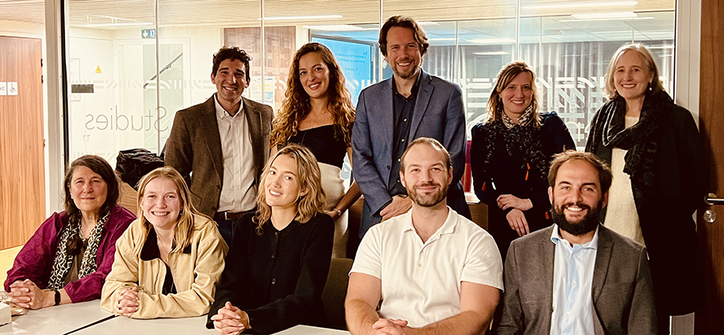
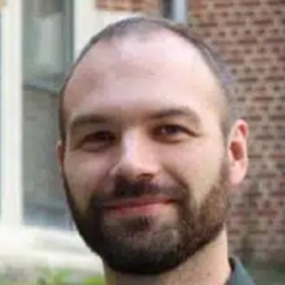
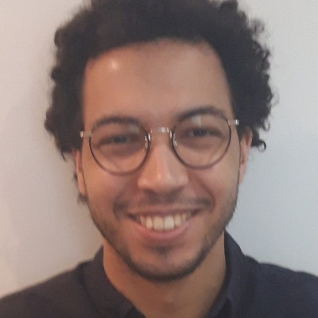
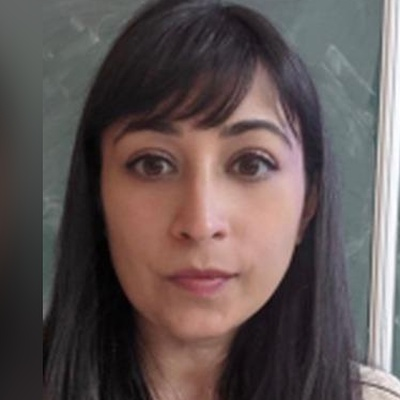
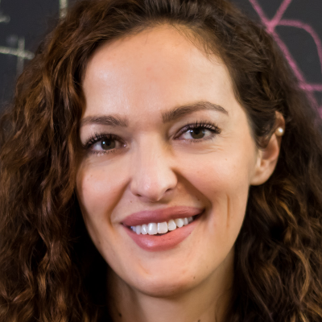
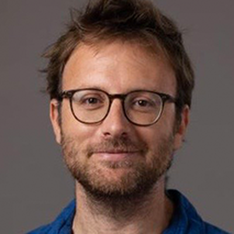
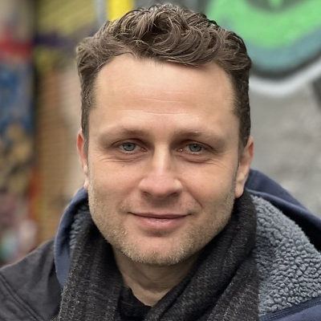
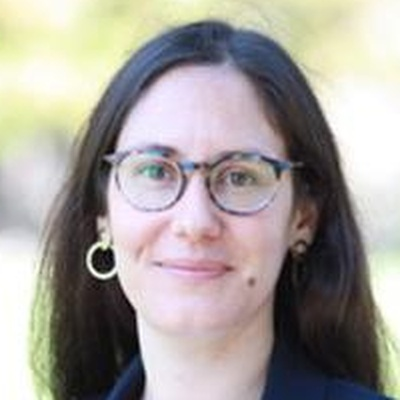

Community
Faculty fellows, affiliate members, visiting scholars, and the students who sustain the Center's intellectual life.








Former Visiting Scholars



Anna Sophia Abundis · Emily Barlett · Sarah Beck · Madison Coakley · Zachary Egan · Clare Flaherty · Halley Hoellwarth · Alessia Lavorato · Yelena Menard · Constanze Melz · Reem Rajab · Alexandra Shao · Jennifer Shoemaker · Anastasiya Sindyukova · Dominic Spada
Visiting Scholars Program
Senior and junior researchers interested in applying are welcome to submit at any time. Scholars have access to CCDS resources, library privileges, and participation in CCDS seminars. Visiting scholars are encouraged to present their research, organize events, and collaborate with CCDS members and the AUP community.
Required documents: CV · selected publications list · proposed stay dates (minimum 3 months notice) · brief research description · potential collaborations · financing information. For PhD candidates: a recommendation letter.
Apply · ccds@aup.edu